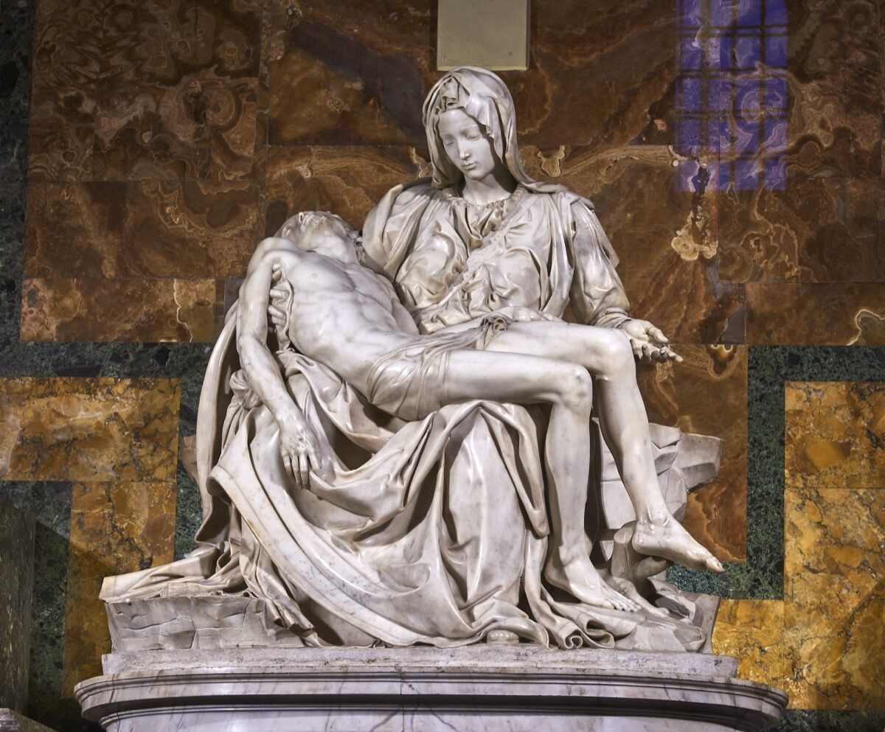
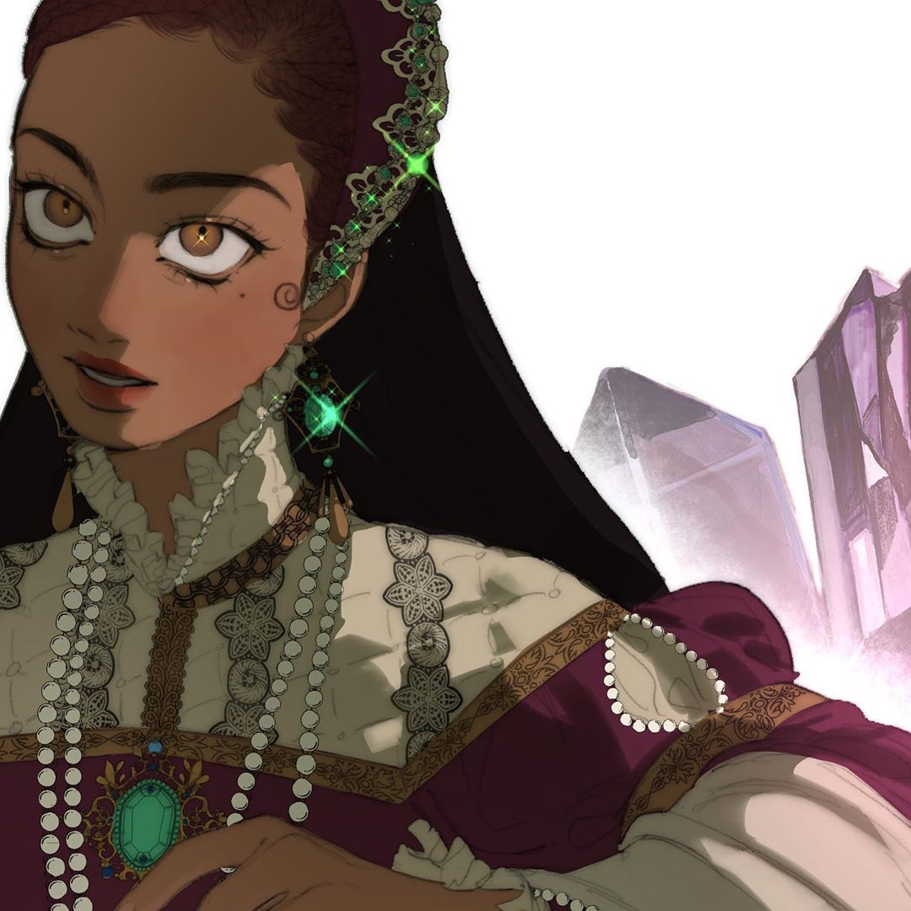
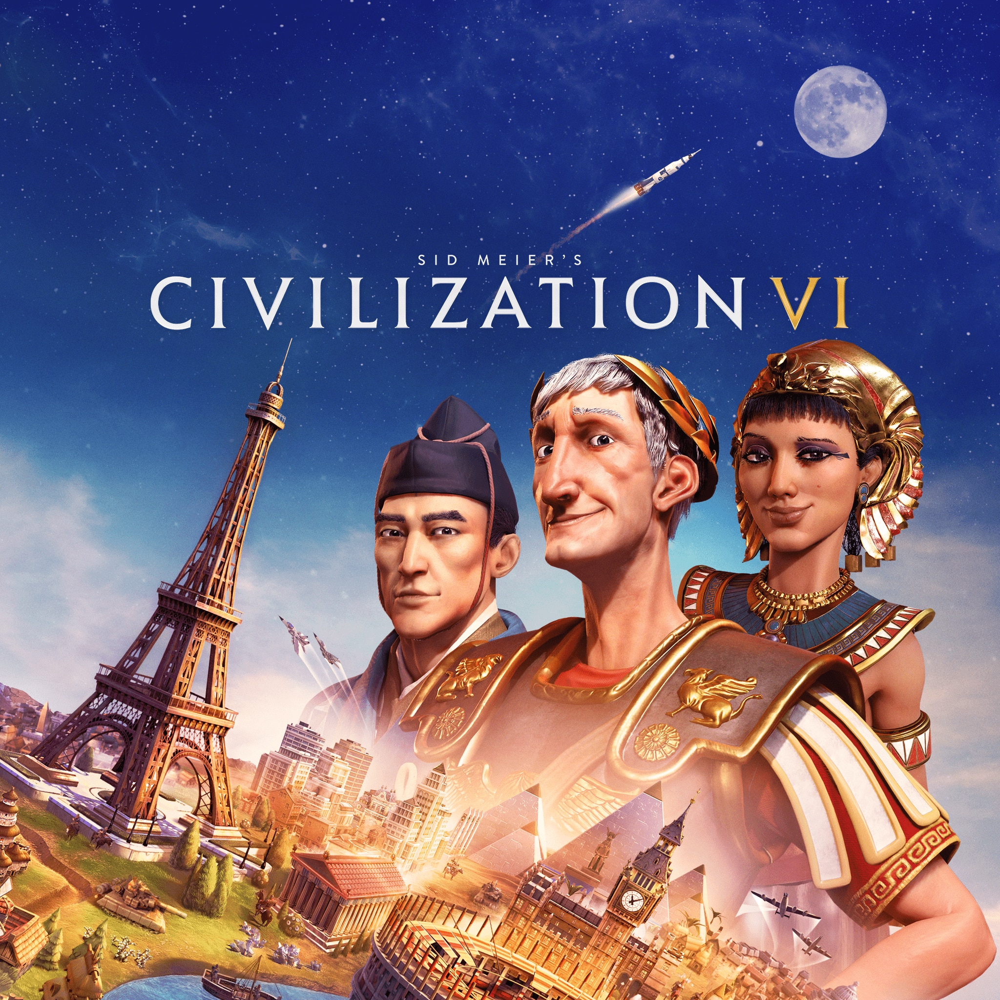

Though I have many hobbies the two I by far spend must of my time on are drawings and gaming.
Since I was very young I've always loved drawing and art in general. My earliest memories are of me sitting in front of the tv trying to drawing my favourite cartoon characters, from Toodles Galore in Tom and Jerry to Ember McLain in Danny Phantom. I've always loved drawing and found it to be a way to show appreciation for the media I enjoy through fanart or a way to create my own stories.
My Favourite Artist <3
| Internet Artist | Animator and Comics | Traditional Artist |
|---|---|---|
| TerraTerrific |
Gabriel Picolo |
Michelangelo  |
| Plastic Bottru  |
Stan Lee |
Yayoi Kusama |
Video Games have always been something in the background of my life, as someone who grew up with 4 boys. But was never something I fully engaged with until I was in my early teen years, while I would play would games like CoD with my brothers and cousin and they did everything in their power to make me feel welcomed. It was just not my type of game. And then I discovered the Sims 3, a game that did not solely comprise of running around and shooting people. And that was a real eye-opener for me, and suddenly I found all these games I could enjoy. Games that spoke to my interest and I could play for hours on end. I am still not a big fan of FPS games, but I found other genres I liked.
My Favourite Games <3
| RPG | Strategy | Simulation |
|---|---|---|
| DragonAge 2 |
League of Legends  |
The Sims 4  |
| ArcheAge |
Civilization 6  |
Cities Skylines |